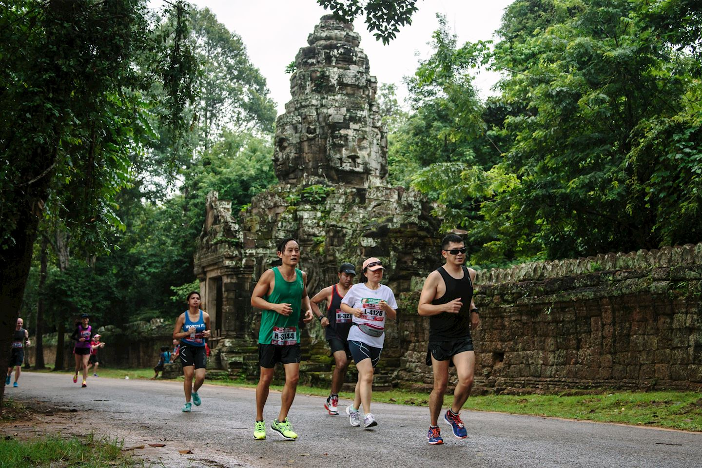
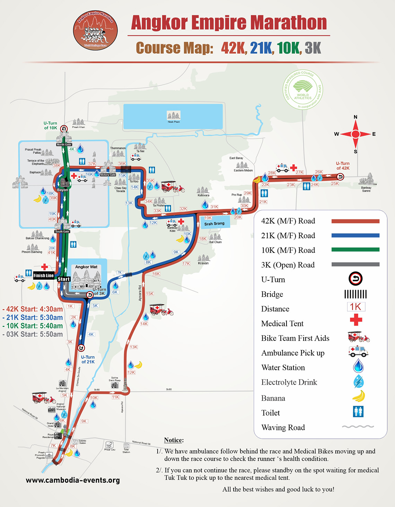
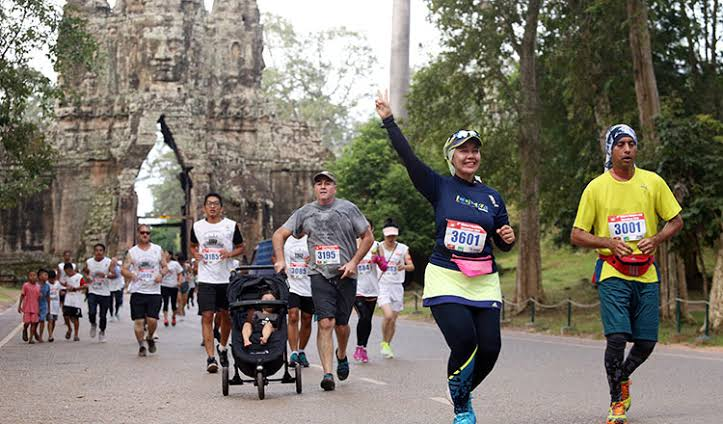

🏛️ 賽事名片與封面
吳哥窟王朝馬拉松 (Angkor Empire Marathon)
穿越千年高棉帝國石雕奇景，唯一的吳哥窟官方認證全馬古蹟賽道
🏃 賽事基本定位
UNESCO 遺產
- 創辦年份：2014 年創辦，獲 AIMS 與 IAAF 官方賽道認證
- 唯一全馬：唯一獲准於吳哥考古公園內舉辦 42.195 km 的正式賽事
- 地理位置：柬埔寨暹粒吳哥考古公園（UNESCO 世界文化遺產保護區）
- 慈善宗旨：賽事收益主要用於資助柬埔寨當地殘障人士與貧困兒童教育
- 參賽規模：預計逾 4,500 人參賽，涵蓋全球 50 餘個國家選手齊聚
世界文化遺產
唯一全馬賽事
AIMS 認證
UNESCO 世界文化遺產 ｜ 唯一官方許可吳哥窟全馬賽事
🌍 跑旅核心精神
千年文明
- 神廟巡禮：賽道環繞並穿越近 40 座古老神廟與石砌城門
- 晨曦啟程：清晨 4:30 於小吳哥中央聖殿前起跑，第一縷晨光映照蓮花塔尖
- 氣候考驗：8 月熱帶雨季平均 26°C~31°C、相對濕度 >80%，考驗熱適應能力
- 雙賽辨析：明確區別 8 月全馬「帝國馬拉松」與 12 月半馬「吳哥窟國際半馬」
穿越千年石雕歷史長廊 ｜ 在佛面微笑下見證毅力與慈善

🏛️
穿越千年古蹟石雕長廊
圖片路徑：images/angkor_01.jpg
圖 1：小吳哥中央聖殿起終點 ｜ 跑者披星戴月迎向高棉千年曙光
📋 賽事基本資訊
競賽規程與規格矩陣
4:30 AM 清晨起跑，AIMS 賽道認證與超長 6.5 小時寬容限時
⏱️ 起跑時程與組別
寬容限時
- 舉辦時間：每年 8 月第一個星期日（例如 2026 年 8 月 2 日）
- 全程馬拉松：04:30 AM 起跑，限時 6 小時 30 分（限滿 16 歲）
- 半程馬拉松：05:30 AM 起跑，限時 4 小時 00 分（限滿 16 歲）
- 短程組別：10K 公路賽（05:45 AM / 2 小時）、3K 歡樂跑（06:00 AM）
- 收費機制：國際跑者全馬早鳥價約 60 美元，半馬 50 美元
全馬 6.5 小時
半馬 4.0 小時
⛰️ 地形坡度與路面
極度平坦
- 平坦賽道：全程幾乎無明顯坡度起伏與高低落差，視野平順
- 路面構成：平整柏油路為主，穿插壓實平緩的古蹟紅土林蔭徑
- 林蔭遮蔽：考古園區高聳古樹提供上午前段絕佳的自然遮陽
- 水站配置：每 2 公里設置一處水站，供應冰鎮礦泉水與電解質飲料
- 交通管制：賽道實施嚴格人車分流，沿途有警察與志工維持秩序
平整柏油
每 2km 水站
☀️ 濕熱氣候與挑戰
高溫高濕
- 環境氣溫：熱帶雨季氣候，清晨約 25°C~28°C，日間最高達 31°C
- 極致濕度：相對濕度常年高於 80%，汗水揮發散熱效率受阻
- 配速降速：未經熱適應者成績普遍比涼爽賽道慢 15% 至 30%
- 熱適應建議：建議賽前 8 週進行熱適應訓練，提早 3~4 天抵達暹粒
- 補水指引：以口渴即喝為基準，每小時補水量上限約 650 毫升
濕度 >80%
氣溫 26°C~31°C
🤝 雙賽辨析與認證
AIMS 認證
- 帝國馬拉松：8 月舉辦，AIMS 認證全馬，資助當地殘障與兒童慈善
- 吳哥國際半馬：12 月舉辦（涼季），最高僅 21K，資助地雷受害者
- 唯一全馬資格：帝國馬拉松是唯一獲准奔馳 42.195 km 的正式賽事
- 門票提醒：選手號碼布不等於景區門票，賽後觀光須另購 Angkor Pass
- 資格認可：全馬成績可登錄為波士頓等國際賽事資格證明
唯一全馬
IAAF/AIMS 認可
⚡ 賽道結構與魔王路段
巴戎寺佛面笑顏與 80% 濕熱極限考驗
穿梭千年石砌神廟與城門，面對高溫高濕的核心體溫魔王考驗
🗺️ 賽道分段結構剖析
全馬 42.195 km
- 小吳哥啟程（0~5 km）：04:30 AM 頭燈引領起跑，晨光越過小吳哥西回廊與蓮花寶塔
- 巴戎寺古城（5~10 km）：穿越南門石橋，近距離仰望巴戎寺 216 面「高棉的微笑」
- 田園與村莊（11~25 km）：穿過傳統高棉聚落與水稻田，兩側村民與孩童熱情加油
- 茶膠寺環線（26~37 km）：經過未完工的神山金字塔茶膠寺與石雕工藝迴廊
- 終點榮耀（38~42.195 km）：再次掠過塔普倫神廟巨樹奇景，回到小吳哥中央聖殿完賽
環繞近 40 座古老神廟 ｜ 一步一景的千年高棉文明畫卷
🛑 魔王路段：8 月高濕與體溫上升
隱形魔王
- 濕熱隱形殺手：賽道平坦無坡，但 80% 以上相對濕度造成汗水難以蒸發，散熱受阻
- 體能斷崖點（30~35 km）：上午 7:30 太陽升起後陽光直射，無遮蔽路段核心體溫快速飆升
- 石板路面防滑：部分古蹟路段由歷史石塊拼接，晨露與潮濕路面需專注防滑防摔
- 隨站物理降溫：每 2 公里水站務必取水澆頭淋腕，小口補充電解質防抽筋
賽道平坦但高濕致命 ｜ 嚴控前段配速並隨站降溫小口補充電解質

🗿
巴戎寺高棉的微笑賽道
圖片路徑：images/angkor_02.jpg
圖 2：巴戎寺四面佛石雕 ｜ 跑者仰望高棉的微笑穿越千年石砌城門
🎟️ 報名資格與搶票攻略
國際報名管道與分級早鳥機制
線上官網直接報名，分級累進收費與超早鳥優惠策略
🌐 官方線上報名流程
直接註冊
- 報名入口：透過 Cambodia Events 官方網站線上註冊並信用卡付款
- 截止時程：每年 6 月 25 日截止個人報名（團體報名 6 月 20 日截止）
- 無現場報名：比賽當日絕不接受現場報名，必須提前線上登記
- 年齡規範：全馬與半馬須年滿 16 歲，10K 須滿 13 歲，3K 不限年齡
- 確認憑證：繳費成功後保存確認信（Confirmation Slip）作為領物憑據
6 月 25 日截止
需滿 16 歲
💰 報名費用與早鳥優惠
階梯定價
- 全馬費用：國際跑者超早鳥價約 60 美元，隨後依截止梯次累進微調
- 半馬費用：國際跑者超早鳥價約 50 美元，性價比極高
- 短程費用：10K 公路賽約 35 美元，3K 歡樂跑約 15 美元（無晶片）
- 權益包含：號碼布、計時晶片、紀念背心、完賽獎牌與慈善捐助
- 退費條款：完成報名後不可退費或轉讓，依大會章程執行
全馬 $60 USD
半馬 $50 USD
✈️ 跑旅旅行社套裝
安心託付
- 整合服務：國內外知名跑旅機構提供機票、精選酒店與參賽名額全包
- 專屬接送：包含賽前賽後專屬嘟嘟車或巴士接送，免除交通溝通困擾
- 古蹟導覽：通常搭配中文專業古蹟導遊、Angkor Pass 與特色高棉晚宴
- 自由行評估：暹粒旅遊配套成熟，自訂機酒與嘟嘟車亦十分安全便利
- 行程建議：建議規劃 5 天 4 夜，預留賽前適應與賽後寺廟深度遊覽
含導遊接駁
建議 5 天 4 夜
📝 賽資領取（Expo）
賽前領取
- 領取時間：賽前兩天（7 月 31 日與 8 月 1 日，09:00 至 18:00）
- 領取地點：暹粒皇家吳哥度假村（Royal Angkor Resort 或萬豪酒店）
- 必備文件：護照正本、確認信（Confirmation Slip），建議自備簽名筆
- 物資內容：紀念背心、號碼布（背貼計時晶片）、別針與手冊
- 代領規範：若委託代領，須檢附選手親簽委託書與護照影本
賽前兩天領物
皇家吳哥度假村
🚗 交通住宿與領物寄物
暹粒住宿權衡、嘟嘟車接駁與清晨出發
從市區出發前往小吳哥，三大住宿聚落優缺點與起終點物流
🏨 暹粒三大住宿區域權衡
跑者首選
- Wat Bo / 河邊區域：距起點約 6~7 km，環境安靜優雅、無夜生活干擾，跑者首選
- 老市場 / 酒吧街：距起點約 7 km，餐飲豐富生活便利，但週末夜生活較嘈雜
- 市區北側渡假村：距起點約 3~5 km，車程最短但房價較高，適合追求省時者
- 清晨早餐盒：清晨 3:30 出發，務必提前一天請飯店準備打包早餐盒
- 空調溫度調控：室內冷氣切勿開得過冷，避免室內外溫差過大引起呼吸道不適
Wat Bo 區安靜清幽 ｜ 跑者賽前優質睡眠的首選區域
🛺 賽日嘟嘟車接駁指引
預約專屬 Tuk Tuk
- 專屬交通載具：暹粒以嘟嘟車（Tuk Tuk）為主要交通工具，靈活穿梭園區
- 提前預約司機：務必於賽前一天確認 03:30 AM 出發時間與賽後等候地點
- 車程時間預估：從市區前往小吳哥車程約 20 分鐘，沿途有路燈與志工引導
- 清晨時間節奏：03:00 起床用餐、03:30 出發、04:00 前抵達起點進行寄物與熱身
- 司機辨識技巧：互留通訊軟體，並拍下車牌與司機合影以利賽後快速會合
提前預約專屬 Tuk Tuk 司機 ｜ 約定賽後接送集合點
📦 終點寄物與物資規範
草坪寄物區
- 寄物專區：吳哥窟中央聖殿正前方大草坪設有大會專屬寄物帳篷
- 寄物流程：使用大會寄物貼紙貼於個人行李袋，憑號碼布號碼寄放與領取
- 寄放清單：建議寄放乾淨排汗衣物、小毛巾、拖鞋與賽後補能飲品
- 貴重品管理：護照、錢包與手機建議隨身攜帶或存放於飯店保險箱
- 完賽動線：過線後領取完賽獎牌、冰毛巾、純水與香蕉，隨後領取寄物袋
起跑點即終點 ｜ 寄放乾淨換洗衣物與賽後降溫毛巾
🎒 跑步裝備、補給與氣候應變
熱適應協定、透氣輕裝與補水降溫
應對 80% 高濕度氣候，科學補水防抽筋與速乾輕量裝備配置
🌡️ 8 週熱適應與補水
散熱調適
- 8 週漸進適應：賽前 8 週每週安排 2 次熱暴露訓練（輕鬆跑多穿一層或賽後桑拿）
- 提早抵達適應：建議提早 3~4 天抵達暹粒，使汗腺與心血管提早適應熱帶環境
- 小口頻飲原則：沿途每 2 公里水站小口補水 100~150ml，每小時上限 650ml
- 防範低血鈉症：切忌盲目暴飲純水，交替飲用電解質飲料或搭配自備鹽錠
- 賽前鈉鹽儲備：開賽前 24 小時適度增加飲食鈉含量，增強體內水分滯留能力
連續 10~14 天熱暴露形成適應 ｜ 提前抵達適應氣候
👕 輕量透氣與防摩擦
速乾背心
- 服裝選擇：穿著超輕量、透氣且不黏身的排汗跑步背心與極短跑褲
- 公路跑鞋：賽道整體平整，穿著抓地良好且透氣的公路競速鞋或碳板鞋
- 防磨膏防護：大腿內側、腋下、腰部及足部塗抹防磨膏，防汗水浸濕摩擦
- 散熱配件：配戴透氣空頂遮陽帽（可置入冰塊）與運動太陽眼鏡
- 清晨頭燈：清晨 4:30 起跑天色全黑，前 5 公里建議配戴輕量頭燈確保路況安全
高濕度汗水浸透衣物 ｜ 務必全面防磨並配戴空頂散熱帽
🧊 物理降溫與抽筋預防
隨站淋水
- 冰水海綿降溫：水站若提供海綿或冰塊，及時擦拭後頸、手腕以壓制核心體溫
- 嚴格控制前段：前 20 公里壓制興奮情緒，配速比涼爽天氣放慢 15~20 秒 / 公里
- 定時補充鹽錠：隨身攜帶 4~6 顆電解質鹽錠，每 40~50 分鐘補充一顆預防抽筋
- 抽筋應變步驟：肌肉有緊縮感時立即改為快走，至下一水站伸展補充電解質
- 醫療應急網絡：賽道重要節點與終點設有醫療帳篷，配備急救醫護人員
賽道每 2 公里設水站 ｜ 隨站物理降溫比盲目衝刺更有效
🗺️ 賽後觀光與跳轉導航
千年古蹟深度巡禮與世界遺產跳轉
4 步驟賽後科學恢復，Angkor Pass 寺廟巡禮與下一站古典馬拉松
🌟 賽後速效恢復與神廟巡禮
高棉古蹟
- 物理冷水浸泡：返回飯店後立即進行 10 分鐘冷水或泳池浸泡，快速抑制肌肉發炎
- 黃金 60 分鐘補能：一小時內補充高棉鹹味湯麵、雞蛋與熱帶水果，修復肌醣與蛋白質
- 延後深層按摩：完賽當天切勿進行深層推拿，建議安排在賽後第二天（週一）進行 SPA
- Angkor Pass 觀光：另行購買官方門票，參訪小吳哥日落、大吳哥城與塔普倫神廟巨樹
賽後當天冷水浴降溫 ｜ 深層按摩與陡峭寺廟登山延後至隔日
🧭 賽事跳轉導航
雙向導航
- 下一站賽事：[[雅典經典馬拉松]]（馬拉松歷史發源地，從馬拉松平原奔向泛雅典體育場）
- 賽事主題：同屬「世界遺產與自然荒野賽道」主題
- 總索引回訪：隨時返回首頁索引查看 12 場賽事矩陣與知識圖譜

🏅
吳哥窟王朝馬拉松完賽獎牌
圖片路徑：images/angkor_03.jpg
圖 3：古文明完賽榮耀 ｜ 刻劃小吳哥經典蓮花佛塔的完賽紀念勳章